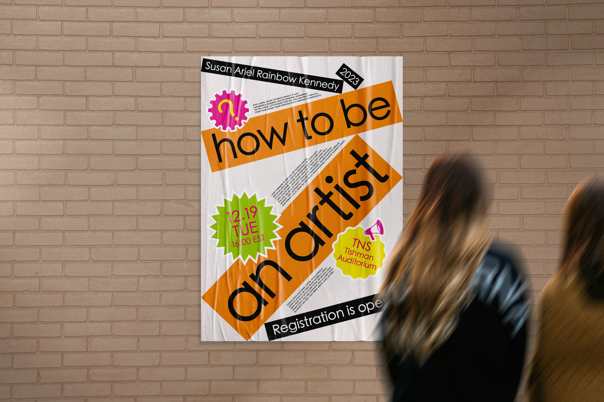

Motion Poster
How to be an Artist

Printed matter, Motion graphic
23.4 x 33.1 in
23.4 x 33.1 in
How to Be an Artist is a manifesto created by Susan Ariel Kennedy, an artist and writer whose words encourage everyday creativity through observation and action.
Inspired by the playful spirit of the text, I designed a poster using an unconventional layout, vivid sticker-like graphics, and a clean sans-serif typeface.
The poster's vibrancy reflect the manifesto’s call to approach life with curiosity, spontaneity, and creative intent.